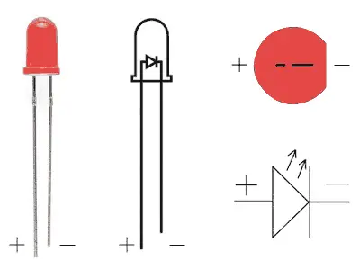
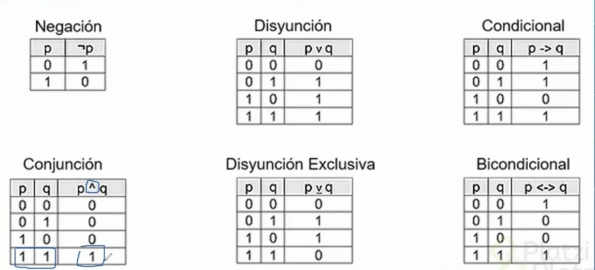

Cuando no esta pulsado el valor que tiene es 0
Cuando esta pulsado el valor que tiene es 1
Al 0 y al 1 se le conoce como BIT "UNIDAD BASICA DE INFORMACION BINARIA"
En el voltaje el 1 = 5 voltios
Y el 0 = 0 voltios
En un led encendido = 1 y apagado = 0
La conexion mas pequeña es el cátodo |------
Y la más grande es el ánodo ------|>
Una señal es la variación de una magnitud que permite transmitir información. Las señales pueden ser analógicas y digitales.
Señal analógica, es aquella que toma valores continuos.
Señal digital, es aquella que toma valores discretos o digitales. Pueden ser valores concretos, es decir no varían a lo largo del tiempo.
Represetación de las variables de entrada y las variables de salida.
Número de combinaciones = 2^n , donde n = # de variables